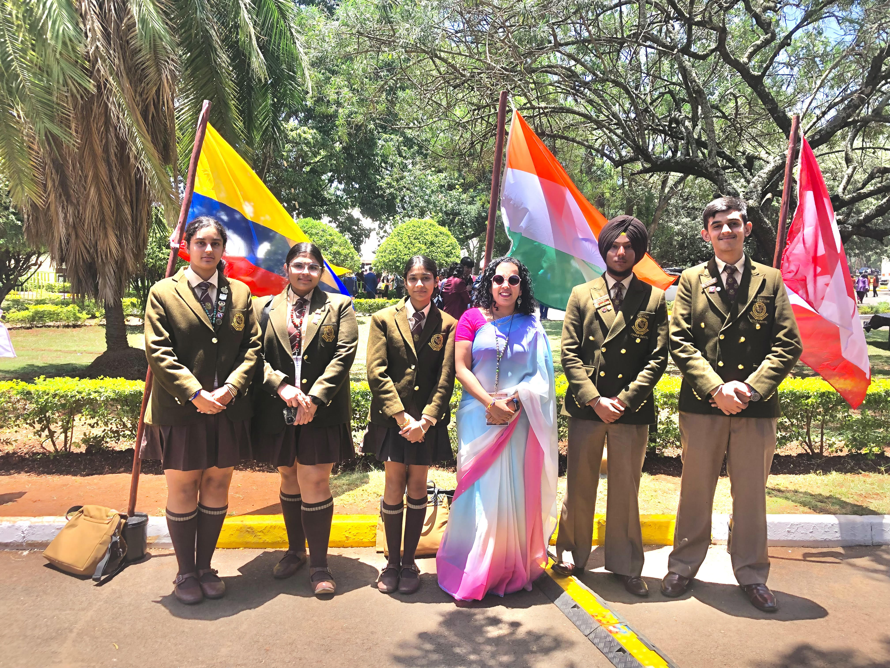
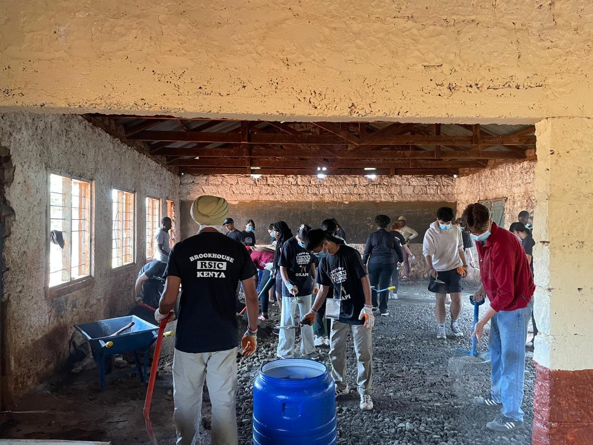
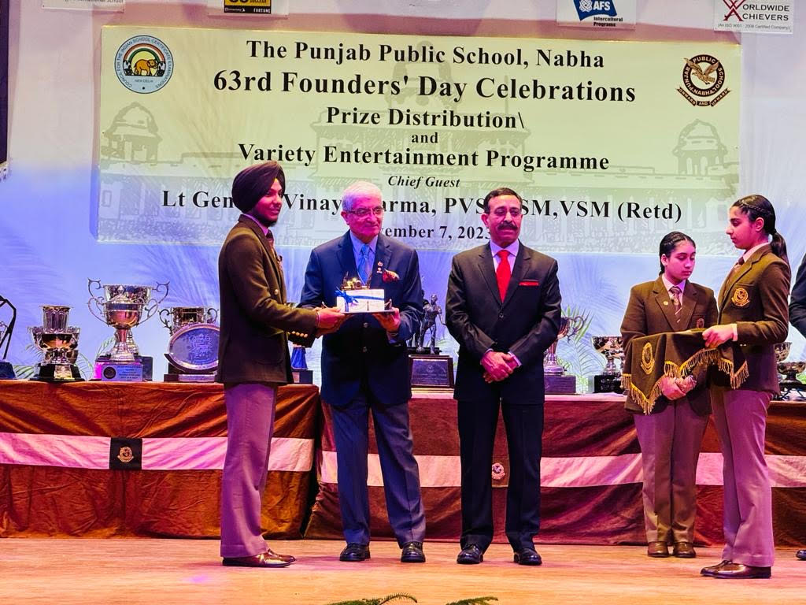
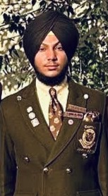

greetings!!
I am Hirdayjeet Singh Bhandal from Punjab, India. During my school years, I immersed myself in a variety of co-curricular activities. I was a key member of organizing committees for various events and proudly served as Captain of Jumna House. Achieving the Most Improved Student of the passing batch 2024 prize was a significant honor for me.Additionally, I was actively involved in the Round Square society, participating in conferences and service projects. A highlight of my school experience was showcasing Punjabi culture through Bhangra performances, which I choreographed and presented at several events. Despite not being naturally gifted, through practice, dedication, and discipline, I gradually perfected my skills. Engaging in activities such as poetical recitation, public speaking, and anchoring further shaped my leadership and communication abilities. These experiences have not only enriched my school life but also prepared me for future endeavors with confidence and resilience.
I am Hirdayjeet Singh Bhandal from Punjab, India. During my school years, I immersed myself in a variety of co-curricular activities. I was a key member of organizing committees for various events and proudly served as Captain of Jumna House. Achieving the Most Improved Student of the passing batch 2024 prize was a significant honor for me.Additionally, I was actively involved in the Round Square society, participating in conferences and service projects. A highlight of my school experience was showcasing Punjabi culture through Bhangra performances, which I choreographed and presented at several events. Despite not being naturally gifted, through practice, dedication, and discipline, I gradually perfected my skills. Engaging in activities such as poetical recitation, public speaking, and anchoring further shaped my leadership and communication abilities. These experiences have not only enriched my school life but also prepared me for future endeavors with confidence and resilience.
I have participated in Following Round Square events:-
- International Round Square conference hosted by Brookhouse School,Nairobi.
The Round Square International Conference 2023 held at Brookhouse Schools in Nairobi was hailed for its exceptional organization and warm hospitality. With over 1,200 delegates from 160 schools worldwide, the event showcased a rich tapestry of activities. From cultural workshops to musical performances by alumni like @ericwainainamusic and @kagwemungai. The opening ceremony at Bomas of Kenya featured cultural displays and honored Nobel laureate Wangari Maathai. Throughout the conference, themed days focused on democracy, adventure safaris in Nairobi National Park, and community service projects at local schools. The conference culminated in a keynote by Paralympian Henry Wanyoike.
 - International Round Square Conference hosted by Millenium School,Dubai.
The International Round Square Conference at Millennium School, Dubai, themed "The Art of Growing 2022," united global delegates in exploring leadership, sustainability, and cultural exchange. Workshops focused on innovation and community service, while keynote speakers addressed resilience and diversity. Cultural showcases and collaborative projects highlighted the conference, emphasizing Round Square's IDEALS. Participants departed enriched and inspired, ready to apply their learning for positive global impact.
 - Service project hosted by Welham Boys' School,Dehradoon.
- Round Square Conference hosted by Sunbeam School,Varanasi.
My other Endeavours:-
- Honoured with the award for the most Improved Student in Passing out Batch 2024.
- Internship with International Model United Nation by WHO.
- American Feild Services Project to help leprosy afected and handicapped people.
- Rural Education and Adventure Program at House of Lalpur.
- Part of School Trick Riding Display Team.
- Participated and won several certificates in Declamation and Poetical recitation competitions.
- Part of tree Plantation Drive'Mission Hariali' organised by Apna Punjab Foundation.

Participating & Organising Cultural Events:-
- Member of the Prefectorial Body of School.
- Organizer of House Cultural Evening Show.
- Member Organising team For Shri J.K Kate Memorial Knowledge Conclave.
- Lead The Trick Riding Display Squad Independence Day Celebration By the State.
